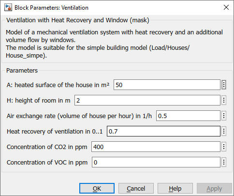

Ventilation
Ventilation Path: CARNOT/Source/Ventilation
Ventilation
Path: CARNOT/Source/Ventilation
Purpose
Model the ventilation of a room for the House_simple model.
Description
The block is a model for
a ventilation of a room or buildung with mechanical and
window ventilation. The mechanical ventilation is working with a fixed air
exchange rate and a constant heat recovery.
The volume flow of the windows enters the building at outdoor ambient
temperature. Properties of the
outdoor ambient are (temperature and humidity) are taken form the Weather Data
Bus. As the weather data files have no information on CO2 and VOC concentration
you have to set these parameters in the block.
Additionally a Thermo-Hydraulic Bus for an
external air supply of the building can be added. All three flow rates
(mechanical ventilation, windows and supply air) are added to the THB_vent
entering the building. The block Mix_T_Mdot with
the enthalpy mixing option is used to mix correctly the supply air and the
outdoor air in THB_vent.
Inputs:
Output
Parameters and dialog box

Characteristics
Direct Feedthrough Yes
Sample
time
Inherited
from driving block
Vectorized
No